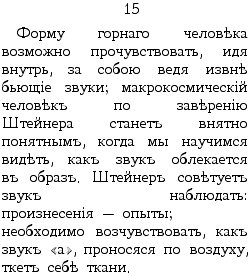
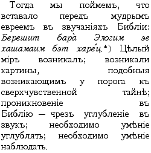
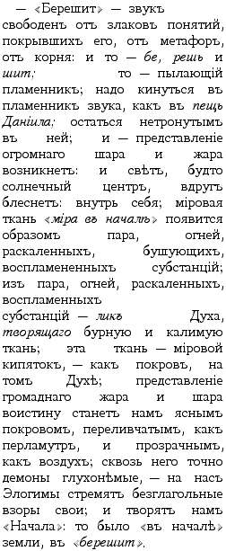
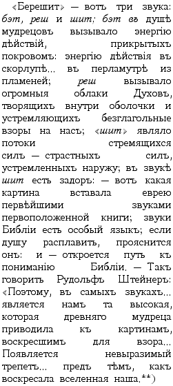
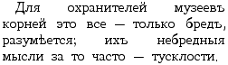
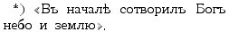
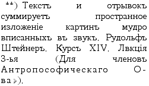

Glossolalia (Section 15)

It is possible to sense the form of the cave man, by going inside, leading out after yourself the beating sounds; the macrocosmic human being according to the assurances of Steiner will become distinctly comprehensible, when we learn to view how a sound is clothed in the image. Steiner counsels us to observe the sound: pronunciations are -- attempts; it is essential to sense how the sound "a" as it wafts through the air, weaves for itself weaves.

Then we will comprehend, what rose up before the wise Jew in the sounds of the Bible; B'reschit bara élohim et haschamajim w'et ha'arez* The whole world arose; pictures emerged resembling those rising up at the threshold to the suprasensible mystery; immergence into the Bible is -- via delving deeply into sound; the ability to delve deeply is essential; the ability to observe is essential.

-- "Bereshit" is -- a sound free from the grassblades of comprehension/concepts that conceal it, free from metaphors, from the root: and then it is -- be, resh, and shit; then -- a flaming flambeau; you have to fling yourself into the flambeau of sound, like into the furnace of Daniel; to remain untouched in it; and -- a representation of an enormous sphere shape and of ashen heat will arise: and a light, as if the solar center, suddenly gleams: inside of itself; the world's weave "of the world in the beginning" will appear as an image of steam, of fires, of scorched, raging, inflamed substances; out of the steam, the fires, the scorched, raging, inflamed substances comes -- the countenance of the Spirit, who creates the stormy and white hot fabric; this woven fabric is -- the world's boiling water, -- like a cover, on that Spirit; the representation of enormous heat and of the sphere will in truth become for us a clear cover, iridescent, like mother of pearl, and transparent, like the air; through it precisely like deaf-mute demons, -- the Elohim strive with their voiceless stares at us; and they create for us "Beginnings": what was "in the beginning" of the earth, in "bereshit."

"Bereshit" -- here are three sounds: bet, resh and shit; bet in the soul of the wisemen evoked the energy of actions, which had been concealed by the cover; the energy of an action is in a shell (scorlupa)... in a mother-of-pearl of flames; resh evoked enormous clouds of Spirits, creating inside the cover and striving their speechless stares at us; "shit" was streams of striving forces -- passionate forces, which had been striving to the surface; in the sound shit there is ardor: -- this is the kind of picture which arose in front of the Jew from the very first sounds of the first placed book; the sounds of the Bible are a special language; if you melt the soul, it clarifies: and -- there opens a path to the comprehension of the Bible. -- So says Rudolf Steiner: "Therefore, in the sounds themselves. . .we have the elevated school, which brought the ancient wiseman to the pictures, which had been resurrected to vision... An inexpressible trembling appears ... before, our universe was resurrected."**

For the protectors of the museums of roots this is all -- simply delirium, it stands to reason; their indelirious thoughts on the other hand are frequently -- pallors.

* "In the beginning God created the heaven and the earth."

**The text and the excerpt summarize the spatial depiction of pictures wisely inscribed into sound. Rudolf Steiner. Course XIV. Third lecture. (For members of the Anthroposophical Society.)